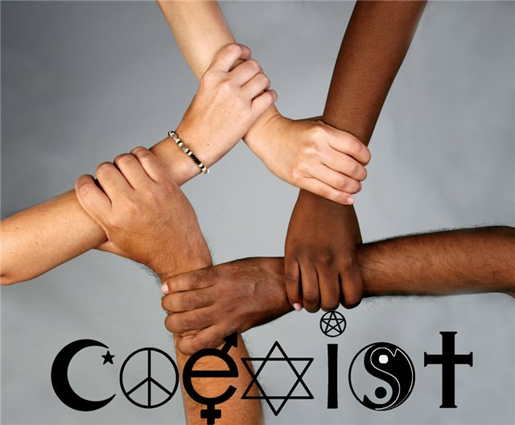

ადამიანის უფლებები და თავისუფლებები წარმოადგენს ფუნდამენტურ პრინციპებს, რომლებიც საფუძვლად უდევს თანამედროვე დემოკრატიულ საზოგადოებებს. ეს უფლებები აღიარებულია საერთაშორისო დონეზე და მიზნად ისახავს ყველა ადამიანის ღირსებისა და თანასწორობის დაცვას. ადამიანის უფლებათა კონცეფცია ისტორიულად ვითარდებოდა საუკუნეების განმავლობაში, მაგრამ მისი თანამედროვე გაგება ძირითადად ჩამოყალიბდა მეორე მსოფლიო ომის შემდეგ. 1948 წელს გაერთიანებული ერების ორგანიზაციამ მიიღო ადამიანის უფლებათა საყოველთაო დეკლარაცია, რომელიც გახდა საფუძველი მრავალი ქვეყნის კანონმდებლობისა და საერთაშორისო ხელშეკრულებებისთვის. ძირითადი უფლებები მოიცავს სიცოცხლის, თავისუფლების და უსაფრთხოების უფლებებს. ეს ნიშნავს, რომ ყველა ადამიანს აქვს უფლება იცხოვროს თავისუფლად, არ იყოს მონობაში ან წამების მსხვერპლი. ასევე მნიშვნელოვანია თანასწორობის პრინციპი, რომლის თანახმადაც ყველა ადამიანი თანასწორია კანონის წინაშე, განურჩევლად რასის, სქესის, რელიგიის თუ სხვა ნიშნისა. სამოქალაქო და პოლიტიკური უფლებები უზრუნველყოფს ადამიანების მონაწილეობას საზოგადოებრივ ცხოვრებაში. ეს მოიცავს გამოხატვის თავისუფლებას, რელიგიის თავისუფლებას, შეკრებისა და გაერთიანების უფლებას. დემოკრატიულ საზოგადოებებში ეს უფლებები საშუალებას აძლევს მოქალაქეებს თავისუფლად გამოხატონ თავიანთი აზრები და მონაწილეობა მიიღონ პოლიტიკურ პროცესებში. სოციალური და ეკონომიკური უფლებები ასევე მნიშვნელოვანი ნაწილია ადამიანის უფლებათა სისტემისა. ეს მოიცავს განათლების, ჯანდაცვის, შრომის და ცხოვრების ადეკვატური სტანდარტის უფლებებს. ეს უფლებები მიზნად ისახავს უზრუნველყოს ყველა ადამიანისთვის ღირსეული ცხოვრების პირობები და თანაბარი შესაძლებლობები. მიუხედავად იმისა, რომ ადამიანის უფლებები საყოველთაოდ აღიარებულია, მათი სრული რეალიზაცია კვლავ გამოწვევად რჩება მსოფლიოს მრავალ ნაწილში. უფლებების დარღვევები, დისკრიმინაცია და უთანასწორობა კვლავ არსებობს. ამიტომ, საერთაშორისო ორგანიზაციები, სამოქალაქო საზოგადოება და მთავრობები განაგრძობენ მუშაობას ამ უფლებების დასაცავად და გასაუმჯობესებლად. დასკვნის სახით შეიძლება ითქვას, რომ ადამიანის ძირითადი უფლებები და თავისუფლებები წარმოადგენს ფუნდამენტურ ღირებულებებს, რომლებიც აუცილებელია სამართლიანი, თავისუფალი და მშვიდობიანი საზოგადოების არსებობისთვის. მათი დაცვა და განვითარება რჩება მუდმივ პროცესად, რომელიც მოითხოვს ყველა ადამიანის, საზოგადოებისა და სახელმწიფოს ძალისხმევას.
ასევე შეიძლება დაგაინტერესოთ

10.10.23
სამოქალაქო თავისუფლებები პანდემიის პირობებში

29.03.24
რელიგიური უმცირესობების თავისუფლება საქართველოში

30.10.20
შეზღუდული შესაძლებლობის მქონე პირთა უფლებები